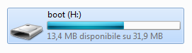
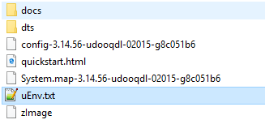
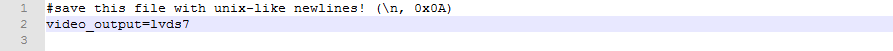

UDOO Quad/Dual Documentation
UDOO Quad/Dual Documentation
UDOO LVDS Panels
By default, UDOO QUAD/DUAL displays the graphical user interface on the HDMI port.
LVDS screens can be connected to the CN13 port. Before the screen can be used, it must be enabled as it follows. You cannot use the HDMI and the LVDS7 or LVDS15 video outputs simultaneously.
Make sure you are powering your UDOO QUAD/DUAL with a 12V power supply when using LVDS screens.
7-inches LVDS panel
The KIT LCD 7" - Touch for QUAD/DUAL is compatible with UDOO QUAD/DUAL. If you previously bought one for the UDOO NEO, you just need to buy a new cable and keep the same screen.
If you are searching for technical details check the UDOO 7" Touch Panel Display Kit Datasheet
15-inches LVDS panel
The KIT LCD 15,6" for QUAD/DUAL and the KIT LCD 15,6" Touch for QUAD/DUAL are compatible with UDOO QUAD/DUAL.
If you are searching for technical details check the UDOO 15" Touch Panel Display Kit Datasheet
Switch video output from HDMI to LVDS
After you connect your LVDS screen to the CN13 connector, you must tell UDOO QUAD/DUAL to use the LVDS panel to draw the GUI. This can be done in several ways:
Option 1: you have an HDMI monitor and mouse/keyboard
If you have an HDMI screen connected to UDOO QUAD/DUAL, open a terminal with the link on the desktop. Then you can switch the main video output from HDMI to LVDS7 or LVDS15 by typing:
sudo udooscreenctl set lvds7
sudo udooscreenctl set lvds15
(default password, if you did not change it, is udooer)
You can revert this change by typing:
sudo udooscreenctl set hdmi
If you want more info about the udooscreenctl command visit the Set Video Output. If you prefer a graphical simple way to change the default video output, it is provided by the UDOO Web Control Panel in the "Configuration"->"Advanced setting" section.
Option 2: you can connect via VNC or SSH
If you can connect to your board via VNC or via SSH (using the USB, WiFi or Ethernet connection) , you can follow the steps explained in the previous section.
Option 3: you have neither HDMI nor network
If you cannot connect to your board via the network (VNC or SSH) and you have no HDMI screen, you can enable the LVDS display port editing a file in the UDOO QUAD/DUAL SD card. Put the flashed SD card in your computer.
A small FAT partition labelled boot will appear:
 Open the file named uEnv.txt contained in the partition.
Heads up! The file must be saved with Unix-like line endings:
- Windows users can use the free Notepad++ text editor to safely edit the file.
- Mac OS X users can use the free TextWrangler text editor to safely edit the file.
- Linux users can use their favourite text editor (gedit, vim, nano) without concerns.
Open the file and, you will need to add this line (if it isn't present):
video_output=
After the = character you need to put the word hdmi or lvds7 or lvds15 for the screen you need:
video_output=hdmi
video_output=lvds7
video_output=lvds15
e.g. :
Save the file, eject the boot partition and restart the board.
Touch Calibration
if you have any problem with touch calibration try to modify the text files:
/etc/X11/xorg.conf.d/90-st1232touchscreen.conf (for the 7" Touch Display)
/etc/X11/xorg.conf.d/91-3m_touchscreen.conf (for the 15,6" Touch Display)
These are the default values for the 7" Touch Display:
Section "InputClass"
Identifier "Touchscreen"
MatchProduct "st1232-touchscreen"
Driver "evdev"
Option "Calibration" "3 794 476 0"
EndSection
These for the 15,6" Touch Display:
Section "InputClass"
Identifier "calibration"
MatchProduct "3M 3M USB Touchscreen - EX II"
Option "Calibration" "1853 14628 2589 14106"
Option "SwapAxes" "1"
EndSection
If the calibration is not good enough you can connect a mouse to UDOO DUAL/QUAD and launch the "Calibrate Touchscreen" application from the bottom bar:
Application Menu -> System Tools -> Calibrate Touchscreen
or running in a terminal the command:
xinput_calibrator
and follow the video instruction to change your calibration.
The official UDOO's Android 6.x version allow you to configure the Video Output directly from the Settings App. Visit the UDOO Android Settings section for more info.
Manual Video Output Configuration
To use your LVDS with UDOO DUAL/QUAD you have to follow these simple instructions.
First connect an external pc to the debug serial of UDOO DUAL/QUAD. Once done connect the serial USB Cable to UDOO DUAL/QUAD and turn it on by plugging the Power Supply.
From your computer, hit a key before normal boot starts up and type the right parameters for your Operating system and LVDS panel.
The default Variable, which outputs to HDMI is:
video=mxcfb0:dev=hdmi,1920x1080M@60,if=RGB24,bpp=32
Exact UBOOT Parameters
15" Android
setenv bootargs console=ttymxc1,115200 init=/init video=mxcfb0:dev=ldb,1366x768M@60,if=RGB24,bpp=32 video=mxcfb1:off video=mxcfb2:off fbmem=28M vmalloc=400M androidboot.console=ttymxc1 androidboot.hardware=freescale mem=1024M
7" Android
setenv bootargs console=ttymxc1,115200 init=/init video=mxcfb0:dev=ldb,LDB-WVGA,if=RGB666,bpp=32 video=mxcfb1:off video=mxcfb2:off fbmem=28M vmalloc=400M androidboot.console=ttymxc1 androidboot.hardware=freescale mem=1024M
HDMI Android
setenv bootargs console=ttymxc1,115200 init=/init video=mxcfb0:dev=hdmi,1920x1080M@60,if=RGB24,bpp=32 video=mxcfb1:off video=mxcfb2:off fbmem=28M vmalloc=400M androidboot.console=ttymxc1 androidboot.hardware=freescale mem=1024M
At the next boot the video source will again be the default one unless you save the configuration you just inserted with the command:
saveenv
In Android you can also boot UDOO DUAL/QUAD from both HDMI and LVDS panel at the same time inserting these variables in a different frame buffer:
e.g. boot on lvds 15? and hdmi.
setenv bootargs console=ttymxc1,115200 init=/init video=mxcfb0:dev=ldb,LDB-WVGA,if=RGB666,bpp=32 video=mxcfb1:dev=hdmi,1920x1080M@60,if=RGB24,bpp=32 video=mxcfb2:off fbmem=28M vmalloc=400M androidboot.console=ttymxc1 androidboot.hardware=freescale mem=1024M
The general Purpose parameters for each video output are:
15"
video=mxcfb0:dev=ldb,1366x768M@60,if=RGB24,bpp=32
7"
video=mxcfb0:dev=ldb,LDB-WVGA,if=RGB666,bpp=32
hdmi
video=mxcfb0:dev=hdmi,1920x1080M@60,if=RGB24,bpp=32 (default environment variable)